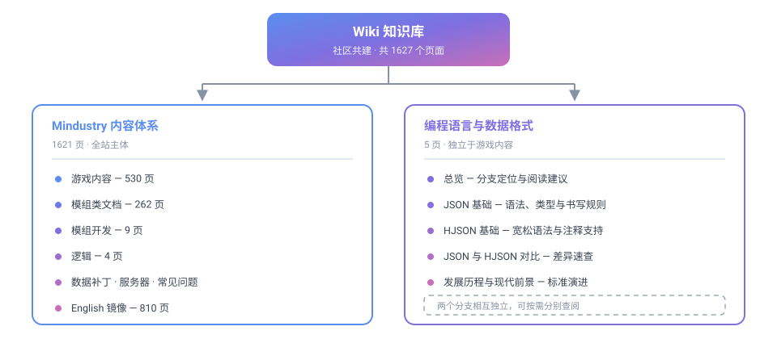

Wiki 知识库
Wiki 是本站的条目式知识库，面向 Mindustry 内容体系与通用数据格式，提供可直接查阅、可交叉引用的技术文档。与面向流程指引的开发者文档、面向问答的常见问题不同，Wiki 承载的是结构化、成体系、可长期沉淀的知识内容。

两大知识分支
Wiki 当前由两个相互独立的分支构成，可按需要直接进入：
| 分支 | 规模 | 定位 | 适合谁 |
|---|---|---|---|
| Mindustry 内容体系 | 1621 页 | 游戏内容的完整技术参考：方块、物品、液体、单位、状态、星球与模组开发 | 模组作者、服主、内容研究者 |
| 编程语言与数据格式 | 5 页 | 配置载体格式的语法与用法：JSON、HJSON 及其相互关系 | 需要读写配置文件的成员 |
两个分支互不依赖：查阅游戏内容不必了解数据格式，反之亦然。两者在「数据补丁」与「模组开发」处交汇，需要时可交叉阅读。
Mindustry 内容体系
Mindustry 的全部游戏内容均以结构化数据描述，Wiki 对其做了系统整理，并按语言提供双语版本。
| 板块 | 内容 |
|---|---|
| 中文版 | 汉化后的完整内容体系，含游戏内容、模组类文档、模组开发、逻辑等分支 |
| English | 与中文版页面一一对应的英文原版，便于对照上游术语 |
| 变更日志 | 内容导入与同步记录 |
中文版的主要分支：
| 分支 | 页数 | 内容 |
|---|---|---|
| 游戏内容 | 530 | 方块（制造、防御、物流、液体、电力、生产、炮塔、单位工厂等）、物品、液体、星球、状态、单位 |
| 模组类文档 | 262 | Java 类的字段、类型、默认值与说明 |
| 模组开发 | 9 | 入门、插件与 JVM 模组、脚本、精灵图制作、标记语言、类型、迁移指南 |
| 逻辑 | 4 | 简介、术语表、代码编写与编辑、变量与常量 |
| 其他 | 5 | 总览、数据补丁、常见问题、服务器界面构建器、服务器 |
编程语言与数据格式
Mindustry 的模组、数据补丁与内容定义以 JSON 及其超集 HJSON 为配置载体。本分支讲解这两种格式的语法、特性与相互关系。
| 页面 | 内容 |
|---|---|
| 总览 | 分支定位、语言关系、格式选择速查 |
| JSON 基础 | 语法结构、两种容器、六种数据类型、书写规则、校验方法 |
| HJSON 基础 | 设计目标、相对 JSON 放宽的四个方面、仍须遵守的规则、常见误区 |
| JSON 与 HJSON 对比 | 语法差异速查、逐项对照、转换方式、选用建议 |
| 发展历程与现代前景 | 标准化里程碑、生态现状、方言与替代方案 |
查阅路径
| 你的目的 | 建议入口 |
|---|---|
| 查询某个方块、物品或单位的属性 | 游戏内容 |
| 编写或调试模组内容 | 模组类文档 |
| 了解如何开始制作模组 | 模组开发入门 |
| 编写数据补丁 | 数据补丁 |
| 弄清配置文件该用哪种格式 | 编程语言与数据格式 |
| 对照英文原文与术语 | English |
内容组织原则
Wiki 的内容遵循以下约定，以保证可长期维护：
| 原则 | 说明 |
|---|---|
| 条目化 | 每个页面聚焦一个主题，可独立查阅与链接 |
| 可交叉引用 | 页面之间通过链接关联，而非重复叙述 |
| 术语统一 | 类名、字段名、变量名等技术标识符保留英文原样 |
| 代码不翻译 | 代码块、配置、指令保持原文，仅注释与正文翻译 |
| 与上游同步 | Mindustry 内容跟随上游版本更新，变更记入变更日志 |
与站内其他板块的分工
| 板块 | 承载内容 |
|---|---|
| Wiki（本板块） | 条目式技术知识：内容参考、格式语法、类文档 |
| 开发者文档 | 流程指引：环境搭建、写作规范、提交上线、配图创作 |
| 常见问题 | 问答式排查：账号、服务器、资源、报错 |
| 版本更新日志 | 版本变更记录与发布说明 |
| 社区公约 | 社区规则与议事程序 |
如何贡献条目
Wiki 内容与站点其他页面采用同一套协作方式：
- 按环境搭建准备好本地环境
- 依 Markdown 写作规范 与 Markdown 语法详解 撰写内容
- 按提交与上线流程提交 Pull Request
- 需要配图时，参考 SVG 图标绘制与创作 与 流程图开发与创作
仓库已提供结构化模板，填写提示见提交与上线流程 · 提 Issue 与写 PR。
待补充方向
以下方向尚无页面覆盖，可优先补充：
| 方向 | 说明 |
|---|---|
| 各平台客户端安装与配置 | 桌面端、移动端的安装与常见配置备忘 |
| 常用外部工具与资源 | 地图编辑器、材质工具、资源站点的使用速记 |
| 服务器联机排错 | 端口、防火墙、版本不一致等常见问题的速查 |
| 文档站维护操作 | 站点结构、导航、构建相关的操作备忘 |
| 其他数据格式 | 如 YAML、TOML 等配置格式的语法讲解 |